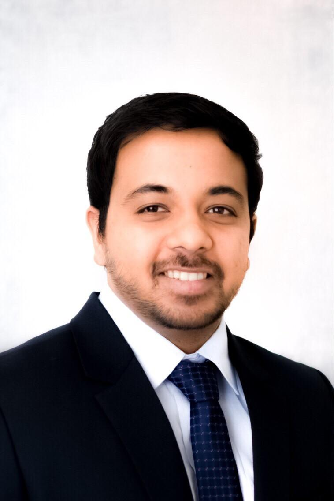

Atomistic Simulation
DFT, molecular dynamics, reactive force fields and machine-learning interatomic potentials.

PEOPLE · GROUP LEAD
Assistant Professor · School of Mechanical Engineering · VIT Vellore
Dr. Prashik Sunil Gaikwad leads the Gaikwad Computational Materials Group, where the group develops computational approaches spanning atomistic simulation, machine learning, electrochemical materials and AI-enabled materials discovery.
01 / ACADEMIC & RESEARCH JOURNEY
School of Mechanical Engineering · Vellore Institute of Technology, Vellore, India
University of Warwick, UK · Dr. Bora Karasulu's group
Microvast, Florida, USA
Idaho National Laboratory, Idaho, USA
Michigan Technological University, Michigan, USA · Dr. Gregory Odegard's group
University of Texas at Arlington, Texas, USA
Savitribai Phule Pune University, Maharashtra, India
02 / RESEARCH PROFILE
Computational materials science across multiple scales, with an emphasis on physics-informed simulation and machine-learning methods.
DFT, molecular dynamics, reactive force fields and machine-learning interatomic potentials.
Battery materials, solid-state electrolytes, SOECs, ion transport and electrochemical interfaces.
Machine learning, graph neural networks and generative approaches for materials discovery.
03 / AWARDS & RECOGNITION
04 / STUDENTS
Student names will be added as the group grows.
05 / GROUP
We welcome students and collaborators interested in computational materials science, AI and energy materials.
Vellore Institute of Technology
School of Mechanical Engineering
Vellore, Tamil Nadu, India